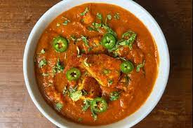

Halloumi Erbsen Curry

Halloumi oder Challúmi (griechisch Χαλλούμι Challoúmi; türkisch hellim; häufig auch nur als Halumi bezeichnet)
ist ein halbfester Käse aus der Milch von Kühen, Schafen oder Ziegen, auch gemischt.
Halloumi wird häufig als „Grillkäse“ bezeichnet.
Dieses Rezept basiert auf einem klassichen indischen Curry, mit Käse anstelle von Fleisch
Zutaten
- Halloumi
- Zwiebel
- Butter
- Tomaten, stückig
- Chili
- Kreuzkümmel
- Kurkuma
- Erbsen
- Ingwer
- Garam Masala
Zubereitung
- Zwiebel, Knoblauch, Ingwer und Chili klein schneiden
- Zwiebeln in einem Topf anschwitzen
- Tomaten mit dazu und die Sauce etwas einkochen
- Erbsen dazu geben und gar kochen
- Den Käse in Stücke schneiden, von allen Seiten anbraten und mit zum Rest des Gerichts geben.
Zurück zur Startseite